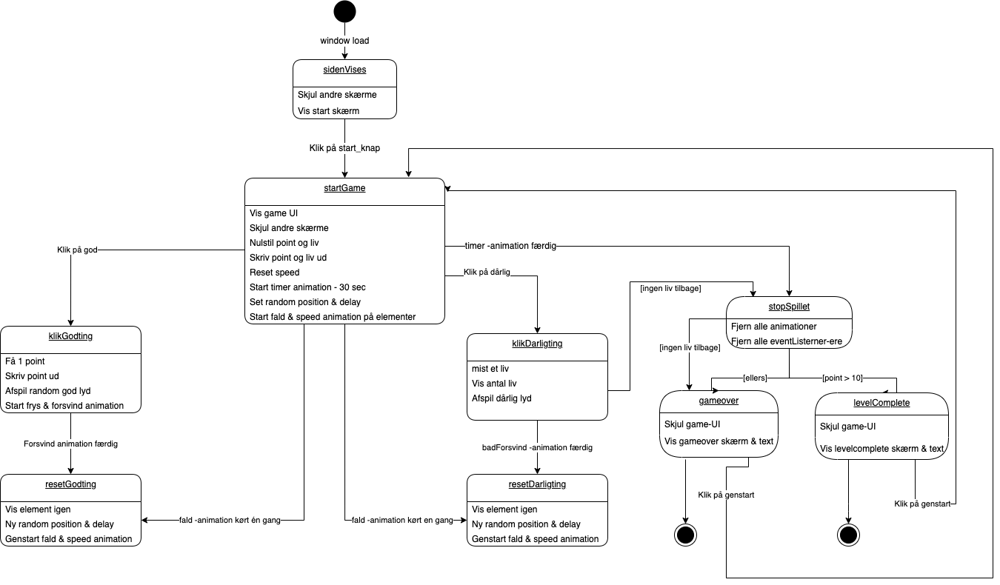

TEKNIK
I spillet Rainbow Farm har spilleren som mål at klikke på 10 grøntsager på 30 sekunder for at vinde. Ved at klikke på kødet mister spilleren et liv, som han har 3 i alt, så spilleren skal være forsigtig for ikke at miste alle sine liv, før tiden løber ud, mens han stræber efter at klikke på gulerødderne for at få 10 point!
